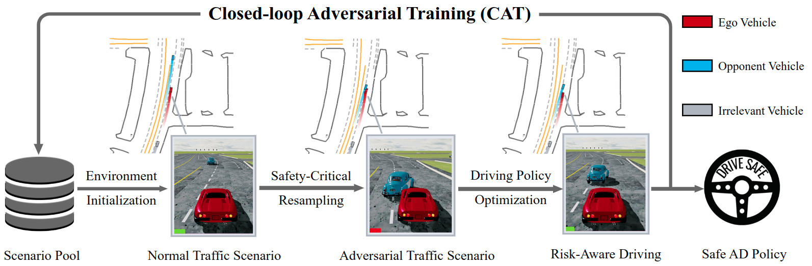
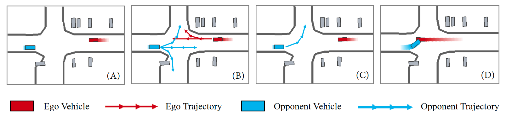

Fig. 1: Overview of the proposed method.
This work introduces the Closed-loop Adversarial Training (CAT) framework for safe end-to-end driving.
CAT imports normal driving scenarios from real-world driving logs and then generates safety-critical counterparts as adversarial training
environments tailored to the current driving policy. The agent continuously learns to address emerging challenges and improves risk awareness
in a closed-loop pipeline. After training, the agent can achieve superior driving safety in both normal and safety-critical traffic scenarios
on the held-out test set.

Fig. 2: llustration of Factorized Safety-Critical Resampling.
One crucial component of the proposed framework is a novel factorized safety-critical resampling technique that efficiently turns normal
driving scenarios into safety-critical ones during training. Specifically, we cast the safety-critical traffic generation as the risk-conditioned
Bayesian probability maximization and then decompose it into the multiplication of standard motion forecasting sub-problems. Thus, we can utilize
off-the-shelf motion forecasting models as the learned prior to generate adversarial scenarios with high fidelity, diversity, and efficiency.
Compared to previous safety-critical traffic generation methods, the proposed technique obtains a competitive attack success rate while significantly
reducing the computational cost (generally less than 1s), making the CAT framework effective and efficient for closed-loop end-to-end driving policy training.